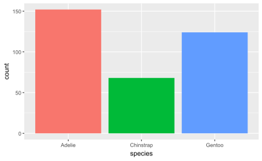

quarto render document.qmd # defaults to html
quarto render document.qmd --to pdf
quarto render document.qmd --to docxQuarto: reproducible publishing
Descriptive Statistics
Ihor Miroshnychenko
Kyiv School of Economics
Hello Quarto
Quarto …
- is a new, open-source, scientific, and technical publishing system
- aims to make the process of creating and collaborating dramatically better

Artwork from “Hello, Quarto” keynote by Julia Lowndes and Mine Çetinkaya-Rundel, presented at RStudio Conference 2022. Illustrated by Allison Horst.
Quarto
With Quarto you can weave together narrative text and code to produce elegantly formatted output as documents, web pages, blog posts, books and more.
just like R Markdown…
but not just like it, there’s more to it…
Quarto …
unifies + extends the R Markdown ecosystem
Quarto …
unifies + extends the R Markdown ecosystem
unifies for people who love R Markdown
Quarto …
unifies + extends the R Markdown ecosystem
unifies for people who love R Markdown
extends for people who don’t know R Markdown
Quarto unifies + extends R Markdown
- Consistent implementation of attractive and handy features across outputs: tabsets, code-folding, syntax highlighting, etc.
- More accessible defaults as well as better support for accessibility
- Guardrails, particularly helpful for new learners: YAML completion, informative syntax errors, etc.
- Support for other languages like Python, Julia, Observable, and more via Jupyter engine for executable code chunks.
A tour of Quarto
Sit back and enjoy! … or follow along with hello-penguins.qmd.
- Running individual cells
- Rendering a document
- Editing with source editor and visual editor
- Inserting images and lightbox effect
- Inserting tables
- Customizing formats:
pdf,docx,revealjs - Customizing format options:
code-fold,toc - Code cells: labels, alt-text, execution options (
echo,warning) - Cross referencing figures and tables, with and without the visual editor
Your turn
Option 1: Start the project 1-rmarkdown-quarto.
Option 2: Launch the project in 1-rmarkdown-quarto.
- Open
hello-penguins.qmdin RStudio and with the visual editor. - Render the document.
- Update your name and re-render.
- Inspect components of the document and make one more update and re-render.
- Compare notes with neighbors about updates you’ve made and note any aspects of the document that are not clear after the tour and your first interaction with it.
Quarto CLI
Revisit: What is Quarto?
Quarto is a command line interface (CLI) that renders plain text formats (.qmd, .rmd, .md) OR mixed formats (.ipynb/Jupyter notebook) into static PDF/Word/HTML reports, books, websites, presentations and more.
mine$ quarto --help
Usage: quarto
Version: 1.5.56
Description:
Quarto CLI
Options:
-h, --help - Show this help.
-V, --version - Show the version number for this program.
Commands:
render [input] [args...] - Render files or projects to various document types.
preview [file] [args...] - Render and preview a document or website project.
serve [input] - Serve a Shiny interactive document.
create [type] [commands...] - Create a Quarto project or extension
use <type> [target] - Automate document or project setup tasks.
add <extension> - Add an extension to this folder or project
update [target...] - Updates an extension or global dependency.
remove [target...] - Removes an extension.
convert <input> - Convert documents to alternate representations.
pandoc [args...] - Run the version of Pandoc embedded within Quarto.
typst [args...] - Run the version of Typst embedded within Quarto.
run [script] [args...] - Run a TypeScript, R, Python, or Lua script.
install [target...] - Installs a global dependency (TinyTex or Chromium).
uninstall [tool] - Removes an extension.
tools - Display the status of Quarto installed dependencies
publish [provider] [path] - Publish a document or project to a provider.
check [target] - Verify correct functioning of Quarto installation.
help [command] - Show this help or the help of a sub-command. Quarto, more than just knitr
We learned from 10 years of literate programming with knitr + rmarkdown

Quarto, more than just knitr

Quarto: More than just knitr

Under the hood
knitrorjupyterevaluates R/Python/Julia code and returns a.mdfile along with the evaluated code- Quarto applies Lua filters + CSS/LaTeX which is then evaluated alongside the
.mdfile by Pandoc and converted to a final output format
Aside: Lua filters
- Here is an example of a Lua filter that converts strong emphasis to small caps, from https://pandoc.org/lua-filters.html:
- Lua filters written by R/Python/Julia developers should be interchangeable between formats - not language specific!
- We won’t go into the details of writing Lua filters in this workshop, and you don’t need to worry about learning about Lua filters unless you’re working on extending Quarto.
From the comfort of your own workspace


Navigating within RStudio
Quarto workflow
Rendering a Quarto file in RStudio via the Render button calls quarto render in a background job, preventing Quarto rendering from cluttering up the R console, and gives you and easy way to stop:

Rendering
- Option 1: In RStudio as a background job, and preview the output.
- Option 2: In the Terminal via
quarto render:
Your turn
Option 1: Start the project 1-rmarkdown-quarto.
Option 2: Launch the project in 1-rmarkdown-quarto.
- Open the last .qmd file you were working on in RStudio.
- Compare behavior of rendering with
- RStudio > Render,
- using the CLI with
quarto render, and - in the R console via
quarto::quarto_render().
- If you’re an RStudio user, brainstorm why you might still want to know about the other two ways of rendering Quarto documents.
Quarto formats
One install, “Batteries included”
Quarto comes “batteries included” straight out of the box:
HTML reports and websites
PDF reports
MS Office (Word, Powerpoint)
Presentations (Powerpoint, Beamer,
revealjs)Books
Manuscripts
…
- Any language, exact same approach and syntax
Many Quarto formats
| Feature | Quarto |
|---|---|
| Basic Formats | html, pdf, docx, typst |
| Beamer | beamer |
| PowerPoint | pptx |
| HTML Slides | revealjs |
| Advanced Layout | Quarto Article Layout |
| Cross References | Quarto Crossrefs |
| Websites & Blogs | Quarto Websites, Quarto Blogs |
| Books | Quarto Books |
| Interactivity | Quarto Interactive Documents |
| Journal Articles | Journal Articles |
| Dashboards | Quarto Dashboards |
Your turn
Option 1: Start the project 1-rmarkdown-quarto.
Option 2: Launch the project in 1-rmarkdown-quarto.
Go to File > New File > Quarto document to create a Quarto document with HTML output. Render the document, which will ask you to give it a name – you can use my-first-document.qmd.
Use the visual editor for the next steps.
- Add a title and your name as the author.
- Create two sections, one with fact you want to learn and your favorite thing about R.
- Add a table of contents.
- Stretch goal: Change the html theme to
sketchy.
One last thing!
Where does the name “Quarto” come from?
Your turn
Option 1: Start the project 2-documents-slides.
Option 2: Launch the project in 2-documents-slides.
Anatomy of a Quarto document
Components
Metadata: YAML
Text: Markdown
Code: Executed via
knitrorjupyter
Weave it all together, and you have beautiful, powerful, and useful outputs!
Literate programming
Literate programming is writing out the program logic in a human language with included (separated by a primitive markup) code snippets and macros.
Metadata
YAML
“Yet Another Markup Language” or “YAML Ain’t Markup Language” is used to provide document level metadata.
Output options
Output option arguments
Indentation matters!
YAML validation
- Invalid: No space after
:
- Invalid: Read as missing
- Valid, but needs next object
YAML validation
There are multiple ways of formatting valid YAML:
- Valid: There’s a space after
:
- Valid: There are 2 spaces a new line and no trailing
:
- Valid:
format: htmlwith selections made with proper indentation
Why YAML?
To avoid manually typing out all the options, every time when rendering via the CLI:
Quarto linting
Lint, or a linter, is a static code analysis tool used to flag programming errors, bugs, stylistic errors and suspicious constructs.


Quarto YAML Intelligence
RStudio + VSCode provide rich tab-completion - start a word and tab to complete, or Ctrl + space to see all available options.

Your turn
Option 1: Start the project 2-documents-slides.
Option 2: Launch the project in 2-documents-slides.
- Open
hello-penguins.qmdin RStudio. - Try
Ctrl + spaceto see the available YAML options. - Try out the tab-completion of any options you remember.
- You can use the HTML reference as needed.
List of valid YAML fields
Many YAML fields are common across various outputs
But also each output type has its own set of valid YAML fields and options
Definitive list: quarto.org/docs/reference/formats/html
Text
Text Formatting
| Markdown Syntax | Output |
|---|---|
|
italics and bold |
|
superscript2 / subscript2 |
|
|
|
verbatim code |
Headings
| Markdown Syntax | Output |
|---|---|
|
Header 1 |
|
Header 2 |
|
Header 3 |
|
Header 4 |
|
Header 5 |
|
Header 6 |
Links
There are several types of “links” or hyperlinks.
Markdown
You can embed [named hyperlinks](https://quarto.org/),
direct urls like <https://quarto.org/>, and links to
[other places](#quarto-anatomy) in
the document.
The syntax is similar for embedding an
inline image: .Output
You can embed named hyperlinks, direct urls like https://quarto.org/, and links to other places in the document.
The syntax is similar for embedding an inline image:  .
.
Lists
Unordered list:
Output
- unordered list
- sub-item 1
- sub-item 1
- sub-sub-item 1
- sub-item 1
Ordered list:
Quotes
Markdown:
> Let us change our traditional attitude to the construction of programs: Instead of imagining that our main task is to instruct a computer what to do, let us concentrate rather on explaining to human beings what we want a computer to do.
> - Donald Knuth, Literate ProgrammingOutput:
Let us change our traditional attitude to the construction of programs: Instead of imagining that our main task is to instruct a computer what to do, let us concentrate rather on explaining to human beings what we want a computer to do. - Donald Knuth, Literate Programming
Your turn
- Skim the previous slides. Share one new that’s new to you with your neighbor.
- Open
markdown-syntax.qmdin RStudio. - Follow the instructions in the document.
Divs and spans
Pandoc, and therefore Quarto, can parse “fenced div blocks”:
- You can think of a
:::div as a HTML<div>but it can also apply in specific situations to content in PDF:
This content can be styled with a border
Divs with pre-defined classes
These can often apply between formats:
Single class: Two equivalent syntaxes
Multiple classes: use { and ., separate with spaces
Callouts
::: callout-note
Note that there are five types of callouts, including:
`note`, `tip`, `warning`, `caution`, and `important`.
:::Note
Note that there are five types of callouts, including: note, tip, warning, caution, and important.
More callouts
Warning
Callouts provide a simple way to attract attention, for example, to this warning.
Important
Danger, callouts will really improve your writing.
Caution
Here is something under construction.
Caption
Tip with caption.
Your turn
- Open
callout-boxes.qmdand render the document. - Using the visual editor, change the type of the first callouts box and then re-render. Also play with the options to change its appearance.
- Add a caption to the second callout box.
- Make the third callout box collapsible. Then, switch over to the source editor to inspect the markdown code.
- Change the format to PDF and re-render.
Footnotes
Pandoc supports numbering and formatting footnotes.
Inline footnotes
Here is an inline note.^[Inlines notes are easier to write,
since you don't have to pick an identifier and move down to
type the note.]Here is an inline note.1
Inline footnotes
Here is an footnore reference[^1]
[^1]: This can be easy in some situations when you have a really long note or
don't want to inline complex outputs.Here is an footnote reference1
Notice in both situations that the footnote is placed at the bottom of the page in presentations, whereas in a document it would be hoverable or at the end of the document.
Code
Anatomy of a code chunk
- Has 3x backticks on each end
- Engine (
r) is indicated between curly braces{r} - Options stated with the
#|(hashpipe):#| option1: value
Available code cell options: https://quarto.org/docs/reference/cells/cells-knitr.html
Code, who is it for?
- The way you display code is very different for different contexts.
- In a teaching scenario like today, I really want to display code.
- In a business, you may want to have a data-science facing output which displays the source code AND a stakeholder-facing output which hides the code.
Code
If you simply want code formatting but don’t want to execute the code:
- Option 1: Use 3x back ticks + the language
```r
```r
head(penguins)
```Showing and hiding code with echo
The
echooption shows the code when set totrueand hides it when set tofalse.If you want to both execute the code and return the full code including backticks (like in a teaching scenario)
echo: fencedis your friend!
Tables and figures
In reproducible reports and manuscripts, the most commonly included code outputs are tables and figures.
So they get their own special sections in our deep dive!
Tables
Markdown tables
Markdown:
| Right | Left | Default | Center |
|------:|:-----|---------|:------:|
| 12 | 12 | 12 | 12 |
| 123 | 123 | 123 | 123 |
| 1 | 1 | 1 | 1 |Output:
| Right | Left | Default | Center |
|---|---|---|---|
| 12 | 12 | 12 | 12 |
| 123 | 123 | 123 | 123 |
| 1 | 1 | 1 | 1 |
Grid tables
Markdown:
+---------------+---------------+--------------------+
| Fruit | Price | Advantages |
+===============+===============+====================+
| Bananas | $1.34 | - built-in wrapper |
| | | - bright color |
+---------------+---------------+--------------------+
| Oranges | $2.10 | - cures scurvy |
| | | - tasty |
+---------------+---------------+--------------------+
: Sample grid table.Grid tables
Output:
| Fruit | Price | Advantages |
|---|---|---|
| Bananas | $1.34 |
|
| Oranges | $2.10 |
|
Grid tables: Alignment
- Alignments can be specified as with pipe tables, by putting colons at the boundaries of the separator line after the header:
+---------------+---------------+--------------------+
| Right | Left | Centered |
+==============:+:==============+:==================:+
| Bananas | $1.34 | built-in wrapper |
+---------------+---------------+--------------------+- For headerless tables, the colons go on the top line instead:
+--------------:+:--------------+:------------------:+
| Right | Left | Centered |
+---------------+---------------+--------------------+Grid tables: Authoring
Note that grid tables are quite awkward to write with a plain text editor because unlike pipe tables, the column indicators must align.
The Visual Editor can assist in making these tables!
Tables from code
The knitr package can turn data frames into tables with knitr::kable():
| species | island | bill_length_mm | bill_depth_mm | flipper_length_mm | body_mass_g | sex | year |
|---|---|---|---|---|---|---|---|
| Adelie | Torgersen | 39.1 | 18.7 | 181 | 3750 | male | 2007 |
| Adelie | Torgersen | 39.5 | 17.4 | 186 | 3800 | female | 2007 |
| Adelie | Torgersen | 40.3 | 18.0 | 195 | 3250 | female | 2007 |
| Adelie | Torgersen | NA | NA | NA | NA | NA | 2007 |
| Adelie | Torgersen | 36.7 | 19.3 | 193 | 3450 | female | 2007 |
| Adelie | Torgersen | 39.3 | 20.6 | 190 | 3650 | male | 2007 |
Tables from code
If you want fancier tables, try the gt package and all that it offers!
| species | island | bill_length_mm | bill_depth_mm | flipper_length_mm | body_mass_g | sex | year |
|---|---|---|---|---|---|---|---|
| Adelie | Torgersen | 39.1 | 18.7 | 181 | 3750 | male | 2007 |
| Adelie | Torgersen | 39.5 | 17.4 | 186 | 3800 | female | 2007 |
| Adelie | Torgersen | 40.3 | 18.0 | 195 | 3250 | female | 2007 |
| Adelie | Torgersen | NA | NA | NA | NA | NA | 2007 |
| Adelie | Torgersen | 36.7 | 19.3 | 193 | 3450 | female | 2007 |
| Adelie | Torgersen | 39.3 | 20.6 | 190 | 3650 | male | 2007 |
Figures
Markdown figures
Penguins playing with a Quarto ball
Markdown figures with options
{fig-align="left"}
{fig-align="right" fig-alt="Illustration of two penguins playing with a Quarto ball."}
Subfigures
Markdown:
::: {#fig-penguins layout-ncol=2}
{#fig-blue width="250px"}
{#fig-orange width="250px"}
Two penguins
:::Subfigures
Output:


Figure divs
Markdown:
::: {#fig-penguin}
<iframe width="560" height="315" src="https://www.youtube.com/embed/q3uXXh1sHcI"></iframe>
Baby penguin tries to make friends
:::Figure divs
Output:
Last paragraph in the div block is used as the figure caption.
Finding the figures to include
In places like markdown, YAML, or the command line/shell/terminal, you’ll need to use absolute or relative file paths:
- Absolute = BAD:
"/Users/mine/quarto-asa-nebraska"- Whose computer will this work on?
Relative = BETTER:
"../= up one directory,../../= up two directories, etc./..or/= start fromrootdirectory of your current computer
Figures from code
Cross references
Cross references
Help readers to navigate your document with numbered references and hyperlinks to entities like figures and tables.
Cross referencing steps:
- Add a caption to your figure or table.
- Give an id to your figure or table, starting with
fig-ortbl-. - Refer to it with
@fig-...or@tbl-....
Figure cross references
The presence of the caption (Blue penguin) and label (#fig-blue-penguin) make this figure referenceable:
Markdown:
See @fig-blue-penguin for a cute blue penguin.
{#fig-blue-penguin}Output:
See Figure 3 for a cute blue penguin.
Figure 3: Blue penguin
Table cross references
The presence of the caption (A few penguins) and label (#tbl-penguins) make this table referenceable:
Markdown:
Output:
See Table 1 for data on a few penguins.
| species | island | bill_length_mm | bill_depth_mm | flipper_length_mm | body_mass_g | sex | year |
|---|---|---|---|---|---|---|---|
| Adelie | Torgersen | 39.1 | 18.7 | 181 | 3750 | male | 2007 |
| Adelie | Torgersen | 39.5 | 17.4 | 186 | 3800 | female | 2007 |
| Adelie | Torgersen | 40.3 | 18.0 | 195 | 3250 | female | 2007 |
| Adelie | Torgersen | NA | NA | NA | NA | NA | 2007 |
| Adelie | Torgersen | 36.7 | 19.3 | 193 | 3450 | female | 2007 |
| Adelie | Torgersen | 39.3 | 20.6 | 190 | 3650 | male | 2007 |
Your turn
- Open
tables-figures.qmd. - Follow the instructions in the document, then exchange one new thing you’ve learned with your neighbor.
Quarto presentations
Components
Metadata: YAML
Text: Markdown
Code: Executed via
knitrorjupyter
Weave it all together, and you have a beautiful, functional slide deck!
Our turn
Let’s build a presentation together from hello-penguins-slides.qmd and showcase the following features of Quarto presentations:
Hierarchy, headers, and document outline
Incremental lists
Columns
Code, output location, code highlighting
Logo and footer
Making things fit on a slide
Chalkboard
Publishing your presentation to Quarto Pub
Your turn
Pick up where we left off and
Change the transition style between slides
Change the slide size
Add slide numbers
Our turn
Let’s continue building our a presentation together from hello-penguins-slides.qmd and showcase the following features of Quarto presentations:
Fragments
Title slide attributes
Wrap up
Quarto presentation formats
revealjs- essentially the replacement forxaringan, but with Pandoc-native syntaxbeamerfor LaTeX slidesPowerPoint for when you have to collaborate via MS Office
Questions?